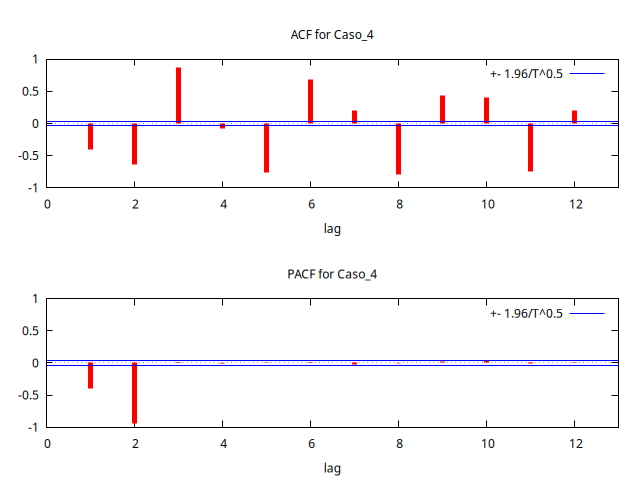
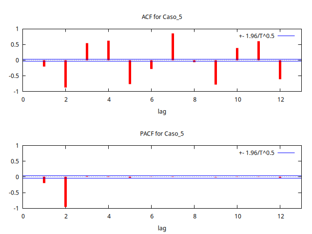
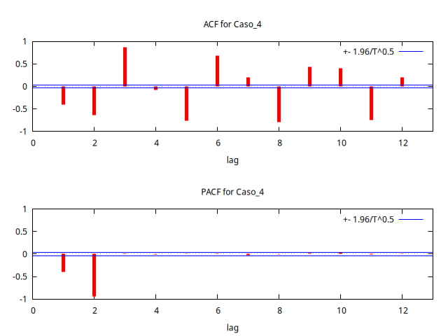
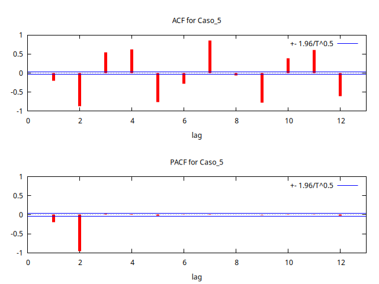

Lección 5.D - Simulación de procesos AR(2) en la región de estacionariedad
Objetivo de la práctica
| Guión: | P-L05-D-simulacion-procesos-AR.inp |
Objetivo
- Observar la ACF y PACF de distintos modelos AR(\(2\)) en las distintas regiones del triángulo de estacionariedad.
Requerimientos previos
Programe o recupere de una práctica anterior una función que simule procesos AR(\(q\))
function series SimuladorAR(matrix phi)
# SimuladorAR(phi) simula un proceso AR(p),
# donde phi es el polinomio AR y p es su grado.
scalar p = cols(phi)
series U = normal(0,1)
series Y = 0
setinfo Y --description="Serie simulada"
loop i = (p+1)..$nobs
scalar comb_pasado_Yt = 0
scalar perturbacion = U[i]
loop j = 2..p
comb_pasado_Yt += -phi[1,j] * Y[i-j+1] # expresión abreviada
endloop
Y[i] = comb_pasado_Yt + perturbacion
endloop
return Y
end function
Para que se observe bien la estructura de las ACF y PACF estimadas, establezca un tamaño de muestra suficientemente grande.
# establecemos la muestra
nulldata 3500
setobs 12 1900:01 --time-series
Recuerde cómo usar la función
scalar phi1 = 0
scalar phi2 = 0.8
series X = SimuladorAR( {1, -phi1, -phi2} )
figura <- corrgm X 12
Actividad 1 - Probando pares de valores en distintas regiones de invertibilidad
Asigne varios pares de valores \(\phi_1\) y \(\phi_2\) que pertenezcan a cada una de las regiones indicadas en la figura y explore cómo se comportan la AFC y PACF en cada caso.

\[ \rho_1=\frac{-\phi_1}{1-\phi_2} ;\qquad \rho_2=\frac{\phi_1^2}{1-\phi_2}+\phi_2 ;\qquad \rho_k=\phi_1\rho_{k-1}+\phi_2\rho_{k-2} ;\qquad \pi_1=\rho_1 ;\qquad \pi_2=\phi_2 ;\qquad \pi_k=0,\; k\geq3 \]
Zona 1
Correlogramas en zona 3
- \(\phi_2=0.45\)
- \(\phi_1\approx0,\quad0.1,\quad0.2,\quad0.3,\quad0.4,\quad0.45\).
Zona 2
Correlogramas en zona 3
- \(\phi_2=-0.45\)
- \(\phi_1\approx-0.45,\quad-0.4,\quad-0.3,\quad-0.2,\quad-0.1,\quad0\).
Zona 3
Correlogramas en zona 3
- \(\phi_2=-0.95\)
- \(\phi_1\approx-1.95,\quad-1.6,\quad-1.2,\quad-0.8,\quad-0.4,\quad0\).
.png) 



.png)
Zona 4
Correlogramas en zona 4
- \(\phi_2=-0.95\)
- \(\phi_1\approx0,\quad0.4,\quad0.8,\quad1.2,\quad1.6,\quad1.95\).
Eje vertical
Correlogramas correspondientes a puntos sobre el eje vertical
- \(\phi_1=0\)
- \(\phi_2\approx-0.9,\quad-0.6,\quad-0.3,\quad0,\quad0.3,\quad0.6,\quad0.9\).
Parábola
Correlogramas correspondientes a puntos sobre la parábola
- \(\phi_1\approx-1.9,\quad-1.3,\quad-0.6,\quad0,\quad0.6,\quad1.3,\quad1.9\).
- \(\phi_2=\frac{-\phi_1^2}{4}\)